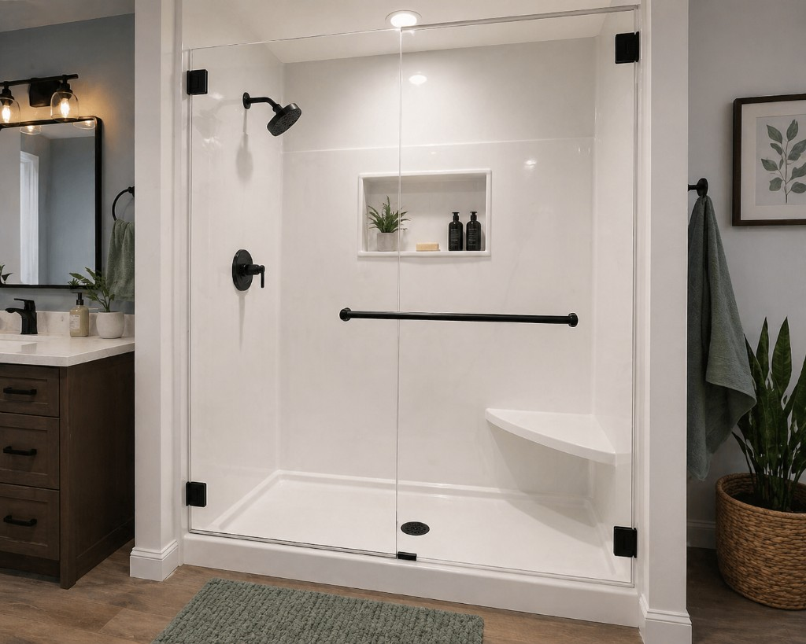

Planning Basics for a Smoother Remodel
A smoother remodel starts long before demo day. Clear goals, a realistic budget, and a practical sequence can save you weeks of delays and thousands in avoidable change orders.
Start by defining your non-negotiables. Decide what must change for your bathroom to work better day to day, such as shower access, storage, lighting, or ventilation. Keep this list short and specific so every design and budget decision can be measured against it.
Next, build a simple budget framework: must-have items, nice-to-have upgrades, and a 10 to 15 percent contingency. Surprises happen in older homes, and having a buffer keeps your project moving instead of stopping midway for financial decisions.
Timeline planning matters just as much. Product lead times for tile, glass, custom vanities, and specialty fixtures can affect your start date. Confirm material availability early, and avoid scheduling installation around items that are still backordered.
Before construction begins, align with your contractor on milestones: demolition, rough plumbing and electrical, inspections, waterproofing, tile, fixtures, punch list, and final walk-through. A shared milestone plan makes communication easier and helps you spot problems quickly.
Finally, make decisions in writing. Product selections, scope details, and change approvals should all be documented. Good documentation reduces misunderstandings and helps your remodel finish closer to the timeline and budget you expected.